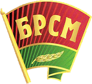
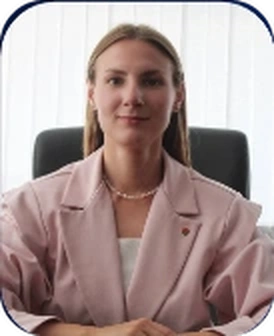
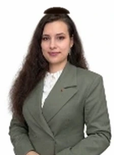

Руководящий состав Общественного объединения «Белорусский республиканский союз молодёжи».
Высший руководящий исполнительный орган Общественного объединения «Белорусский республиканский союз молодежи»
Первый секретарь Центрального комитета ОО «Белорусский республиканский союз молодежи»
Председатель Центральной контрольной комиссии Общественного объединения «БРСМ»
Координация молодёжных проектов, волонтёрства и студотрядовского движения по Брестской области

Первый секретарь Брестского областного комитета ОО «БРСМ»
Второй секретарь Брестского областного комитета ОО «БРСМ»
Организация и поддержка молодёжных инициатив, патриотического воспитания и правопорядка в Пинске
Первый секретарь Пинского городского комитета ОО «БРСМ»
Позвонить: 31-77-29
Второй секретарь Пинского городского комитета ОО «БРСМ»
Позвонить: 62-41-38